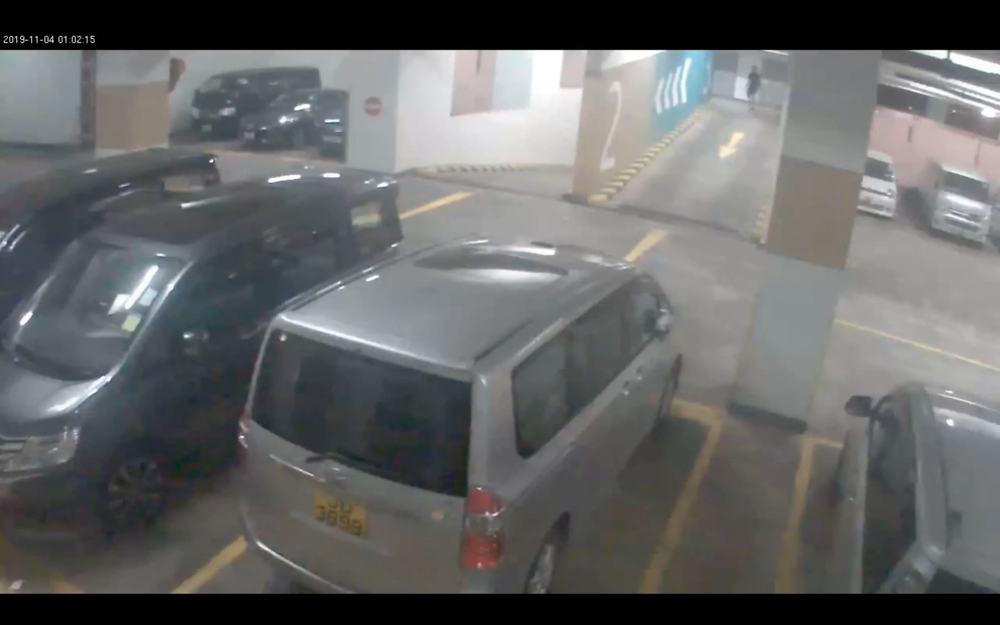

凌晨1時1分39秒最後身影 8秒後出現白光閃過
周梓樂受傷前最後蹤跡，「關鍵時刻」為11月4日凌晨1時01分47秒，即閉路電視所見，發現墮樓位置旁的七人車車頂上方，有白光很快閃過的一刻。而在01分39秒、閃光出現的8秒前，就是鏡頭拍攝到梓樂最後身影的時間，他當時身在尚德停車場3樓，以正常步速行走。

相關報道：
周梓樂的最後身影
關鍵時刻凌晨1時01分47秒 車頂上方有「白光閃一閃」
HKCNEWS